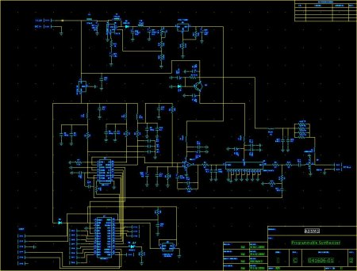

2400 MHz - 435 MHz Receive Converter part 2
After building the new synthesizer (below) I decided that it was foolish to mate it with surplus 1970's vintage technology for the receiver so I designed a new receiver converter with modern components as well. Here are a couple of photos of the receiver in its shield enclosure (a recycled FO video modulator housing) and the whole receiver mated to its enclosure base.
|
Assembled receiver with cavity filter |
Front end electronics |
And here are a couple of photos of the input filter as it was being assembled. A very conventional cavity filter which has an insertion loss at 2401 MHz of 0.5 dB and a 3dB bandwidth of about 15 MHz. Wide enough for use at 2396 but narrow enough to provide some real attenuation at the 2450 MHz used by wireless networking gear and microwave ovens. About $2 worth of standard copper plumbing fittings, a few square inches of copper sheet, 2 SMA connectors (by far the most expensive parts!) and some solder.
|
Couplers and tuning stub |
Assembled cavity |
Finally here is a picture of the schematic for the front end. The receiver employs an RF Microdevices GaAs LNA specifically designed for S-band operation (1.75 db specified NF). I could have gotten a lower noise figure with a discrete solution, but that would have required much more work so I took the easy way out and used the MMIC. Next is a New Japan Radio Corp. GaAs mixer designed for 1900 MHz PCS cellular service, but perfectly workable up through S-band. The mixer boasts nearly 7dB of conversion GAIN - quite a change from the usual case. Both these parts were obtained from suppliers selling small lots on e-Bay, though they can be found elsewhere. In this case I paid less than $2 for both, though I had to buy 100 mixers ($20) and 25 amplifiers ($25). The receiver also uses a very low noise linear 3V regulator from Microchip (whose input is picked off the +5v in the synthesizer) and a couple of Toko helical filters and a common mini circuits Gali series amplifier for the IF. (The prototype ended up with only the input filter installed, but it works fine). You can see in the fully assembled photo above, that I had to move the 5 volt regulator off the synthesizer board to the base plate to proved some heat sinking now that the whole front end is powered from it - it got quite hot when free standing with no heat sink!
Here are a couple of photos of the PCB pattern, the first of of the traces, and the second is of the component silk screen. These are NOT to scale. at the bottom is a .pdf of the trace pattern I used. This is designed for 0.010" Rogers RT-Duroid. This can be obtained on line in 7"x10" sheets (010 thick) from surplus sales (http://www.surplussales.com). The trace widths for all the 50 Ohm transmission lines are 0.016" for this material. It is very low loss, and the small traces make it a reasonable match to the small parts. You could use .031" thick FR-4, but the transmission lines are then 0.050" wide - its still possible to get reasonable transitions down to the component pads without huge discontinuities. You probably cannot use the common 0.062" thick FR-4 since the transmission lines are then 0.1" wide and nearly impossible to smoothly transition to the parts. My first prototype used this material and had significant stability problems, and a much higher noise figure than the final circuit. If you use this pattern I have provided it is possible to simply laser print it onto glossy photo paper (get the kind WITHOUT a plastic back) and iron it onto the RT-Duroid directly. Then just soak the whole thing in warm water and gently rub the paper off. Works like a charm!
|
|
|
|
Component placement diagram |
Trace pattern |

And finally here is a .pdf of the trace pattern which should be exactly to scale. The only potential area of difficulty is the ground trace under the mixer, you may have to use an Exacto knife and scrape away the edges under the mixer to provide more clearance for the pins, especially if you are soldering by hand. Don't worry about detaching pin 5 from the central ground strip. It is also vital to small drill holes beside each of the strip lines (2 or three on each side), at the point where U1-Pin2 meets the larger plane, and the same for pin 5 of U2, and surrounding the filter, as well as the center pin of U4. These should have very small (30 Gauge) wires inserted and soldered to the ground plane on the bottom. More through holes are better so drill as many as you can stand. You also have to add a small jumper underneath to connect the trace feeding power to U1 to the +3V trace feeding U2.
The S-band receive converter (below) revision 1, proved unsatisfactory in actual use. Although it worked fairly well on the bench it suffered from intolerable microphonics on the mast. These are caused (primarily) by the LO design. Its high multiplication factors make it just too sensitive to parasitics, its very noisy, and its output power changes over 6 dB with small changes in the dimension of the shields. So a new LO design was needed. Although the KE5FX hybrid synthesizer could serve here, its really overkill so I set out to design a simplified version more appropriate to use as a fixed service L.O. Below is a small image of the schematic, and a photo of the circuit board.
|  | |
|
Schematic |
Actual circuit |
A pdf of the schematic is under the link above for those who are interested. This synthesizer is simply an Analog Devices ADF4112 synthesizer, a Mini Circuits VCO and a PIC 16F57 together with the necessary power supply circuits to make it all work from 12 volts (nominal) input. It can produce any number (up to several hundred) of switch selectable output frequencies between 1 and 2 GHz, mine is programmed to produce either 1966 MHz or 1152 MHz depending on the status of the push button attached to RA1 at power up (or reset). As you can see from the photo the first spin of the circuit boards contained a couple of small errors, easily fixed with wire-overs. The connector visible at the bottom of the photo is used to program the PIC and is compatible with the inexpensive PICKit2 programmer (< $100) as well as a variety of more expensive devices. I brought all the unused pins of the PIC (most of them!) to pads to allow for easy future expansion. These could be used for relays, a serial interface, or anything else. Below are links to the MPLab project files and assembly code for programming the synthesizer, as well as the Gerber (RS-274) files for the circuit board. I was able to get 10 manufactured (by PCB Express) for $279. The parts are a little less than $100. Pretty cheap for an accurate, low noise microwave synthesizer!
Switching power supply for KE5FX synthesizer
I recently built a couple of KE5FX synthesizers as described in QEX in the March/April 2004 edition. (http://www.qsl.net/ke5fx/synth.html) On the whole, a very nice synthesizer and performance as advertised was fairly easy to get. The biggest drawback to this design is the complex power supply it requires 15 V in 2 places and 20 V for the VCO. For the projects I have in mind these are inconvenient so I set out to build a nice quiet switcher to power the synthesizer. Below is the result including a .zip file with Gerber suitable to have the board manufactured by PCB Express (http://www.pcbexpress.com) - they will make 2 blank boards for about $90, parts for the supply can all be had from Digikey for another $75 or so.
Actual performance is excellent with noise less than .175 mV p-p under load on the 15 V supply, and less than 0.25 mV p-p on the 20 V supply. Here are a couple of photos of the proof of concept circuit (ugly hand wiring), this was mostly built out of junk box components, and the final PC board assembled.
|
Prototype |
Finished board |
Finally - here are the Gerber files for the PC board, the simple ones are top and bottom only (cheaper) and the other one includes solder mask, and a silk screen.
And finally here is the BOM with Digikey part numbers shown
2400 MHz - 435 MHz Receive Converter
I have been building a satellite station recently and wanted a receive converter to convert from S-band (2401 MHz) to UHF. The FM satellites frequently operate in either V/U or L/S modes and so its convenient to have the receive converter work to UHF so that a minimum amount of error prone reconfiguration of transceivers is necessary to change modes. Since DEMI doesn't seem to have such a beast I decided to roll my own. Fortunately I had an old S band television block converter to start from - these are fairly common in rural areas and mostly pre-date direct TV satellites. Thy can usually be had cheap or free. Unfortunately, very little but the mixer is reusable. The LO in these things, although tunable over a wide range, is horribly unstable and could only be used as part of P.L.L. or synthesizer. That being the case I cast around for a nice simple way to build an L.O. - and I found one. Although this design could certainly be improved, in particular the final multiplication should be done in 2 or more steps (e.g. X5, x2) to reduce spurious output, this will work adequately for satellite work - probably not so good for moon bounce or other weak signal modes though! Here is the schematic (and a .pdf so you can save it and zoom to see detail).
receive converter schematic - pdf
Here are a few photos of the various parts as they were being assembled
|
Salvaged converter showing mixer and mounted I.F. amp. R.F. amp is underneath. |
|
Local Oscillator before and shields were added. |
The final implementation added a fixed 120 ohm resistor over the crystal oscillator module, connected in series with 180 ohms to the +12 v. and a block of foam insulation to help stabilize a high temperature on the crystal. Basically a crude constant power oven. Finally, below is a photo with the vertical shields in place, and the L.O. mounted above the mixer. The small strip of brass running down and over the diode multiplier provides an additional parasitic element which peaks the multiplier and provides a few extra dB of output. The heater resistor is visible above the crystal oscillator module. This was before the 8 volt regulator was added to the MMIC amplifier supply line - necessary to prevent overheating when the box is closed.